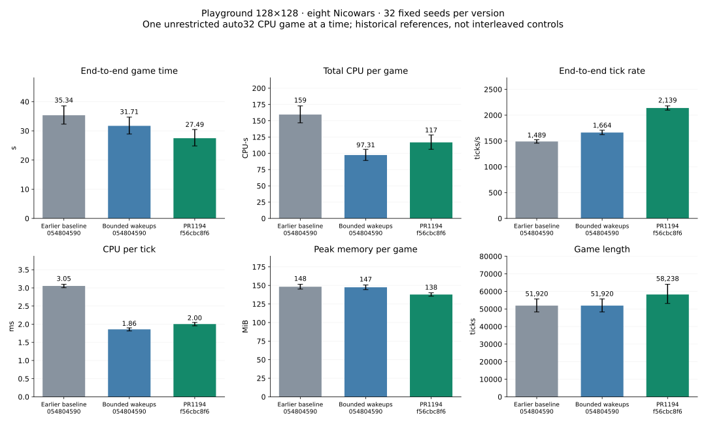

Release revision f56cbc8f624dd35c2066cce1aad51d0d9ada25cf, one unrestricted auto32 CPU game at a time, eight Nicowars on the fixed128×128 map, same32 game seeds. 32 winners and 0 caps.

| Metric (mean per game) | Earlier baseline 054804590 | Bounded wakeups 054804590 | PR1194 f56cbc8f6 |
|---|---|---|---|
| End-to-end game time (s) | 35.340 | 31.714 | 27.486 |
| Total CPU per game (CPU-s) | 159.478 | 97.309 | 116.748 |
| End-to-end tick rate (ticks/s) | 1,489.323 | 1,663.675 | 2,138.548 |
| CPU per tick (ms) | 3.054 | 1.858 | 2.003 |
| Peak memory per game (MiB) | 148.264 | 147.446 | 137.730 |
| Game length (ticks) | 51,920.000 | 51,920.000 | 58,238.000 |
| Metric | Change | Paired95% interval | Adverse seeds |
|---|---|---|---|
| End-to-end game time | -13.33% | [-23.92%, -0.33%] | 8/32 |
| Total CPU per game | +19.98% | [+5.89%, +36.91%] | 20/32 |
| End-to-end tick rate | +28.54% | [+24.63%, +32.40%] | 0/32 |
| CPU per tick | +7.81% | [+4.55%, +11.09%] | 24/32 |
| Peak memory per game | -6.59% | [-8.99%, -3.98%] | 5/32 |
| Game length | +12.17% | [+0.26%, +26.64%] | 18/32 |
| User CPU per game | +22.26% | [+7.55%, +39.92%] | 21/32 |
| System CPU per game | +0.30% | [-8.68%, +11.15%] | 13/32 |
| Voluntary context switches | +8.62% | [-1.88%, +21.30%] | 17/32 |
| Involuntary context switches | +11.33% | [-1.39%, +26.39%] | 19/32 |
Winner and ending tick agree with the earlier bounded-wakeup run on 0/32 seeds. Master changed hiring timing; differences in completion time include changed game trajectories as well as execution costs.
Mean per-game peak RSS and the observed maximum are distinct: latest maximum 158.56MiB. Latest aggregate tick rate: 2118.86 ticks/s; pooled CPU/tick: 2.005ms. Total CPU across latest completed games: 3735.94CPU-s.
Every game · Comparisons and intervals · Summary/methods · Raw audit
Across the completed games, total simulated ticks changed +12.17% and aggregate end-to-end tick rate changed +29.43%. Full completion time changed -13.33%. This is an accounting decomposition (total time = total ticks / aggregate tick rate), not proof that a tick does the same work on both engine versions. Mean recorded orders per game: 22,791 before versus 24,268 on latest.